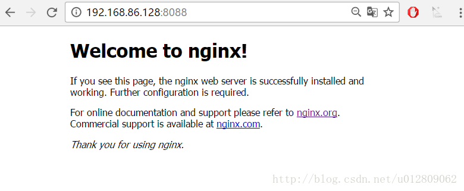

首先到Nginx官网下载tar.gz格式的安装包，这里下载的是nginx-1.10.3版本，环境使用centos6的虚拟机
1、将安装包上传，解压，命令tar -xvf nginx-1.10.3.tar.gz；
2、自定义创建一个文件夹作为Nginx安装目录，这里在home下创建nginx文件夹；

3、在解压的文件夹（nginx-1.10.3）下执行./configure --prefix=/home/nginx 命令。
意思即配置安装环境，将会把Nginx安装到/home/nginx下；
若没有gcc，先安装
yum -y install gcc gcc-c++ autoconf automake make
若出现缺少依赖包则先安装依赖包，以下纯净centos mini版碰到的两个依赖包问题

出现上面这个执行 yum -y install pcre-devel 安装依赖，

出现这个yum install -y zlib-devel 安装依赖，
若还有其他依赖问题，根据缺少的文件提示安装相应的东西；
4、编译：在解压的文件夹下先后执行make 和 make install 命令
5、Nginx默认使用端口是80，这里直接先把Nginx端口改为8088，vi /home/nginx/conf/nginx.conf，修改server的端口，并配置一个图片服务器
1
2
3
4
5
6
7
8
9
10
11
12
13
14
15
16
17
18
19
20
21
22
23
24
25
26
27
28
29
30
31
32
33
34
35
36
37
38
39
40
41
42
43
44
45
46
47
48
49
50
51
52
53
54
55
56
57
58
59
60
61
62
63
64
65
66
67
68
69
70
71
72
73
74
75
76
77
78
79
80
81
82
83
84
85
86
87
88
89
90
91
92
93
94
95
96
97
98
99
100
101
102
103
104
105
106
107
108
109
110
111
112
113
114
115
116
117
118
119
120
121
122
123
124
125
126
127
128
129
130
131
132
133
134
135
136
137
138
139
140
141
142
143
144
|
#user nobody;
worker_processes 1;
#error_log logs/error.log;
#error_log logs/error.log notice;
#error_log logs/error.log info;
#pid logs/nginx.pid;
events {
worker_connections 1024;
}
http {
include mime.types;
default_type application/octet-stream;
#log_format main '$remote_addr - $remote_user [$time_local] "$request" '
# '$status $body_bytes_sent "$http_referer" '
# '"$http_user_agent" "$http_x_forwarded_for"';
#access_log logs/access.log main;
sendfile on;
#tcp_nopush on;
#keepalive_timeout 0;
keepalive_timeout 65;
#gzip on;
server {
listen 8088;
server_name localhost;
#charset koi8-r;
#access_log logs/host.access.log main;
location ~ .*\.(gif|jpg|jpeg|png)$ {
expires 24h;
root /home/images/;#指定图片存放路径
access_log /home/nginx/logs/images.log;#图片 日志路径
proxy_store on;
proxy_store_access user:rw group:rw all:rw;
proxy_temp_path /home/images/;#代理临时路径
proxy_redirect off;
proxy_set_header Host 127.0.0.1;
proxy_set_header X-Real-IP $remote_addr;
proxy_set_header X-Forwarded-For $proxy_add_x_forwarded_for;
client_max_body_size 10m;
client_body_buffer_size 1280k;
proxy_connect_timeout 900;
proxy_send_timeout 900;
proxy_read_timeout 900;
proxy_buffer_size 40k;
proxy_buffers 40 320k;
proxy_busy_buffers_size 640k;
proxy_temp_file_write_size 640k;
if ( !-e $request_filename)
{
proxy_pass http://127.0.0.1:8088;#代理访问地址
}
}
location / {
root html;
index index.html index.htm;
}
#error_page 404 /404.html;
# redirect server error pages to the static page /50x.html
#
error_page 500 502 503 504 /50x.html;
location = /50x.html {
root html;
}
# proxy the PHP scripts to Apache listening on 127.0.0.1:80
#
#location ~ \.php$ {
# proxy_pass http://127.0.0.1;
#}
# pass the PHP scripts to FastCGI server listening on 127.0.0.1:9000
#
#location ~ \.php$ {
# root html;
# fastcgi_pass 127.0.0.1:9000;
# fastcgi_index index.php;
# fastcgi_param SCRIPT_FILENAME /scripts$fastcgi_script_name;
# include fastcgi_params;
#}
# deny access to .htaccess files, if Apache's document root
# concurs with nginx's one
#
#location ~ /\.ht {
# deny all;
#}
}
# another virtual host using mix of IP-, name-, and port-based configuration
#
#server {
# listen 8000;
# listen somename:8080;
# server_name somename alias another.alias;
# location / {
# root html;
# index index.html index.htm;
# }
#}
# HTTPS server
#
#server {
# listen 443 ssl;
# server_name localhost;
# ssl_certificate cert.pem;
# ssl_certificate_key cert.key;
# ssl_session_cache shared:SSL:1m;
# ssl_session_timeout 5m;
# ssl_ciphers HIGH:!aNULL:!MD5;
# ssl_prefer_server_ciphers on;
# location / {
# root html;
# index index.html index.htm;
# }
#}
}
|
server下listen的端口改为8088，并增加一个location配置，用于访问图片文件，这一串配置有#号在前面的注释掉的都可以删掉，免得看起来又长又乱。
6、启动命令： /home/nginx/sbin/nginx -c /home/nginx/conf/nginx.conf。
打开防火墙对应端口供访问，8088，当然也可以直接关了防火墙。
若修改了nginx.conf配置，则需要重启才生效，命令：/home/nginx/sbin/nginx -s reload
7、访问。
输入ifconfig命令查看虚拟机ip，测试：

在/home/images下放张图片，测试访问：